eu-13-10 · forest · 2 proposed road ports
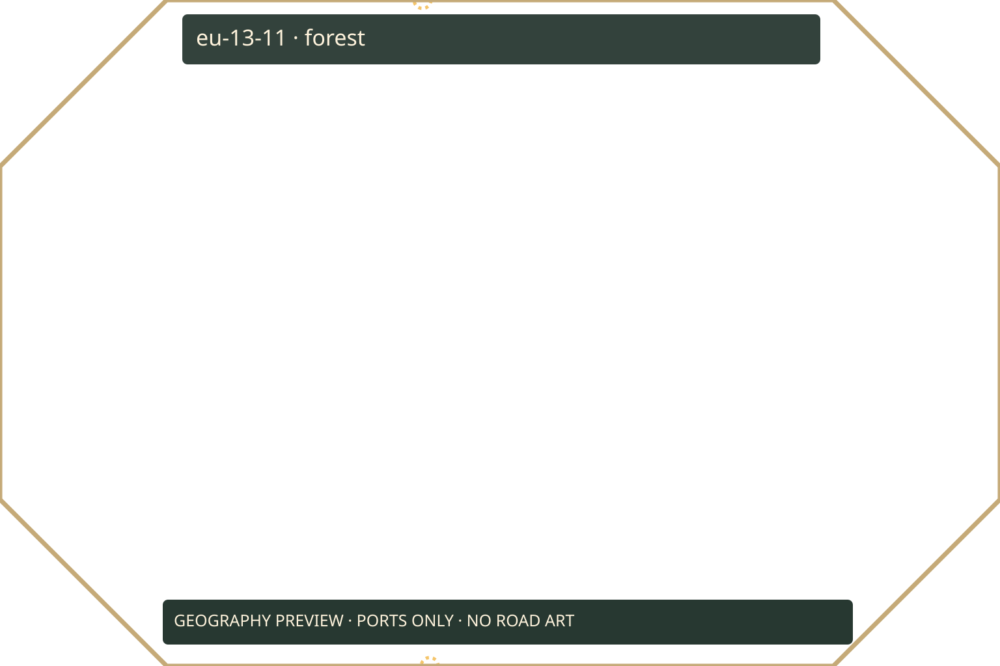
eu-13-11 · forest · 2 proposed road ports
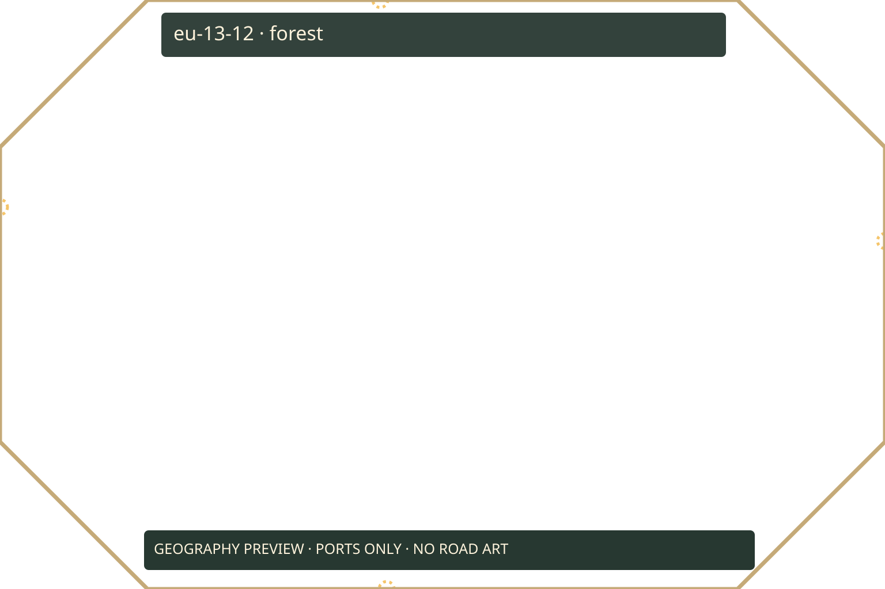
eu-13-12 · forest · 4 proposed road ports
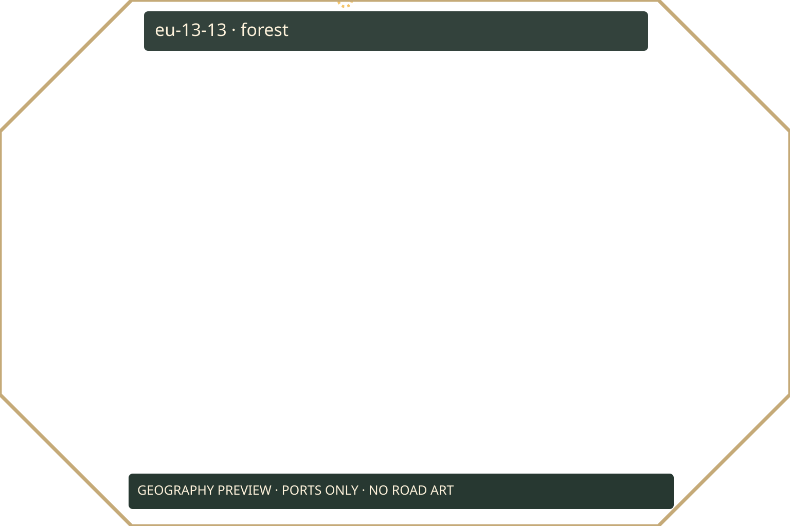
eu-13-13 · forest · 1 proposed road ports
eu-13-14 · coast-and-islands · 0 proposed road ports
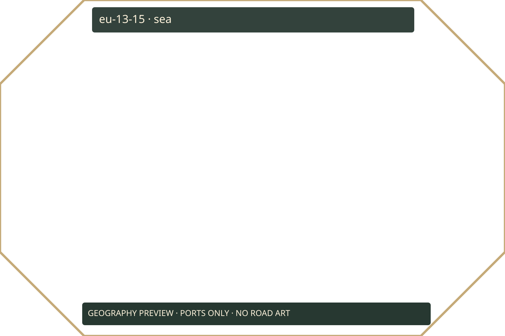
eu-13-15 · sea · 0 proposed road ports
eu-13-16 · coast-and-islands · 0 proposed road ports
eu-12-16 · coast-and-islands · 0 proposed road ports
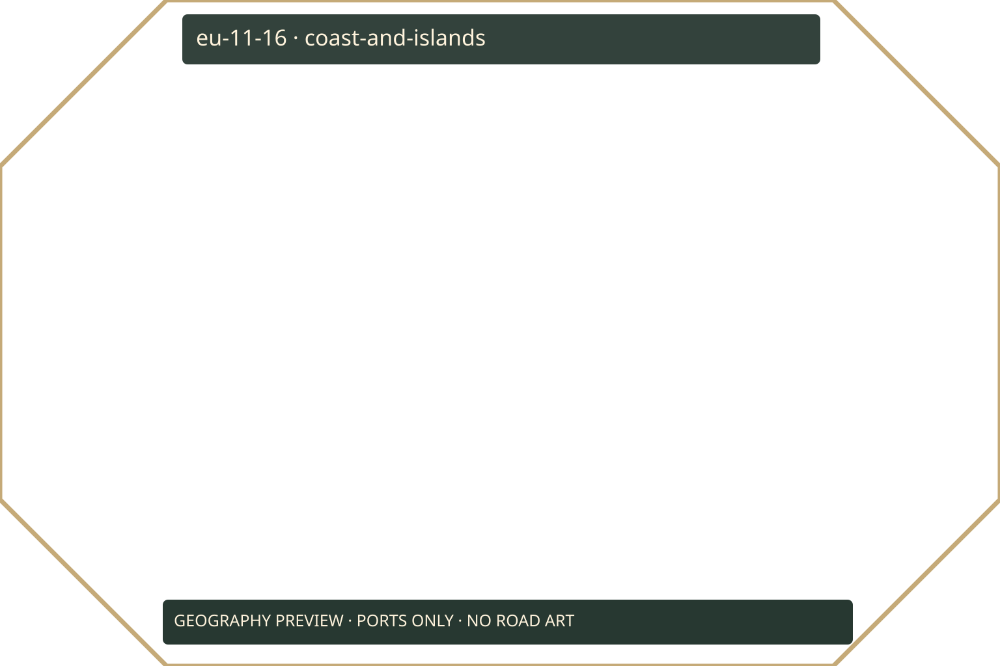
eu-11-16 · coast-and-islands · 0 proposed road ports
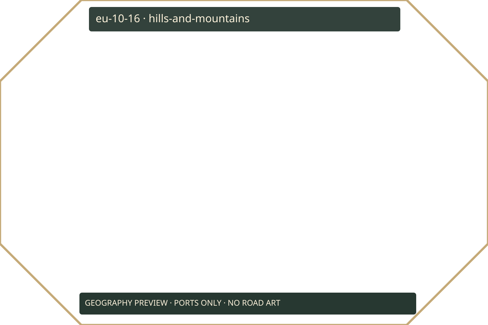
eu-10-16 · hills-and-mountains · 0 proposed road ports
eu-09-16 · coast-and-islands · 0 proposed road ports
eu-08-16 · coast-and-islands · 0 proposed road ports
eu-07-16 · coast-and-islands · 0 proposed road ports
eu-06-16 · coast-and-islands · 0 proposed road ports
eu-05-16 · sea · 0 proposed road ports
eu-05-15 · coast-and-islands · 0 proposed road ports
eu-05-14 · hills-and-mountains · 0 proposed road ports
eu-05-13 · hills-and-mountains · 0 proposed road ports
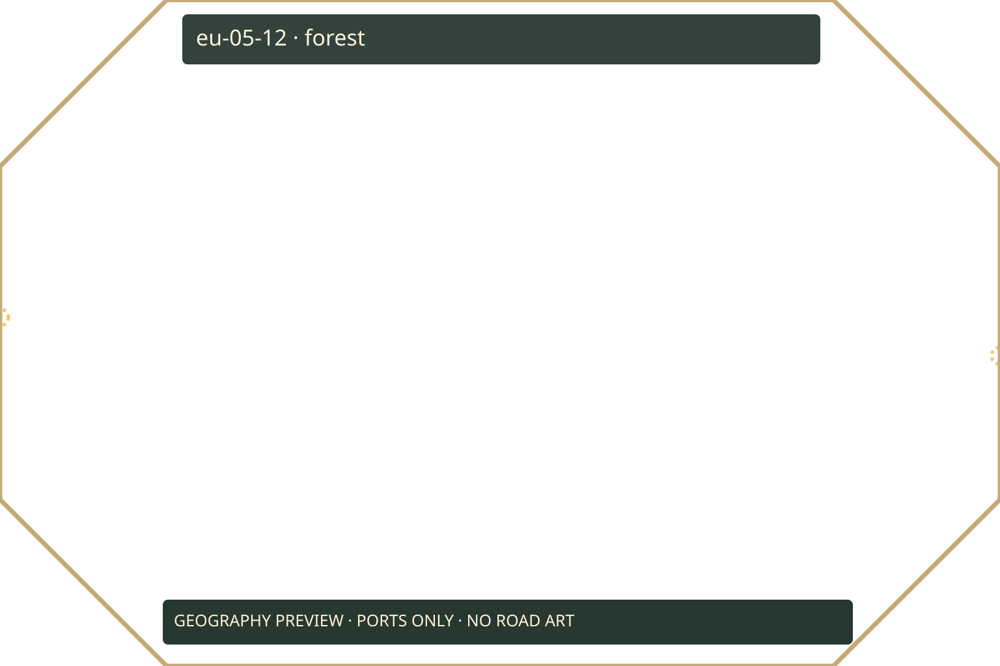
eu-05-12 · forest · 2 proposed road ports
eu-05-11 · forest · 0 proposed road ports
eu-05-10 · coast-and-islands · 0 proposed road ports
eu-05-09 · sea · 0 proposed road ports
eu-05-08 · sea · 0 proposed road ports
eu-06-08 · coast-and-islands · 0 proposed road ports
eu-07-08 · coast-and-islands · 0 proposed road ports
eu-08-08 · coast-and-islands · 0 proposed road ports
eu-09-08 · sea · 0 proposed road ports
eu-10-08 · coast-and-islands · 0 proposed road ports
eu-11-08 · forest · 0 proposed road ports
eu-12-08 · forest · 0 proposed road ports
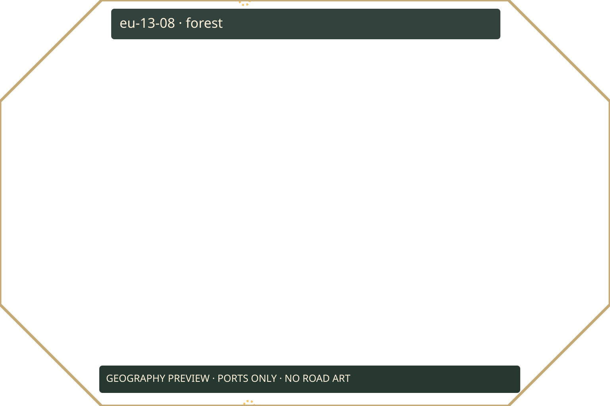
eu-13-08 · forest · 2 proposed road ports
eu-14-08 · forest · 0 proposed road ports
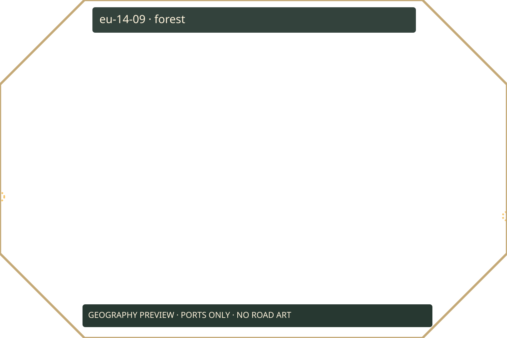
eu-14-09 · forest · 2 proposed road ports
eu-14-10 · forest · 0 proposed road ports
eu-14-11 · forest · 0 proposed road ports
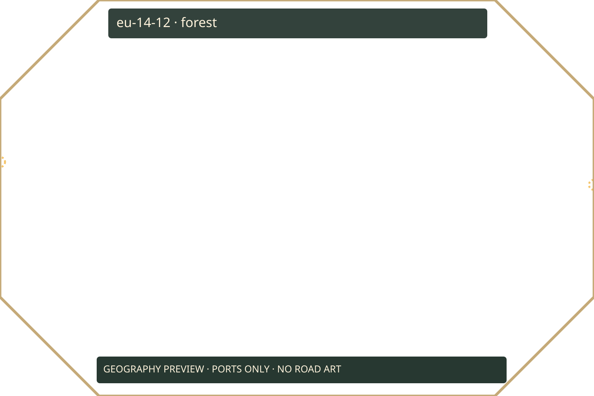
eu-14-12 · forest · 2 proposed road ports
eu-14-13 · coast-and-islands · 0 proposed road ports
eu-14-14 · coast-and-islands · 0 proposed road ports
eu-14-15 · sea · 0 proposed road ports
eu-14-16 · coast-and-islands · 0 proposed road ports
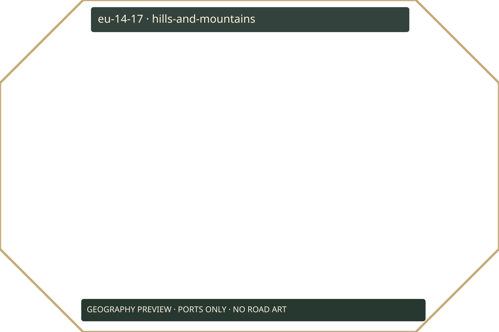
eu-14-17 · hills-and-mountains · 0 proposed road ports
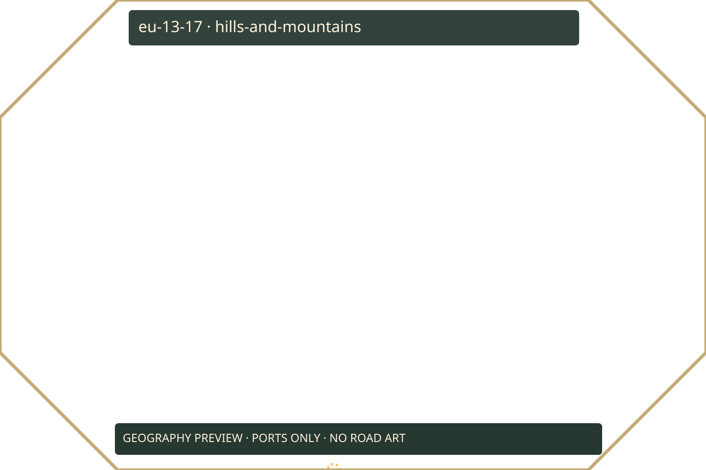
eu-13-17 · hills-and-mountains · 1 proposed road ports
eu-12-17 · hills-and-mountains · 0 proposed road ports
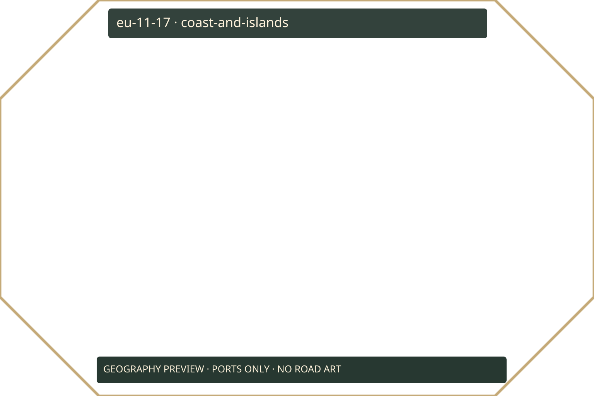
eu-11-17 · coast-and-islands · 0 proposed road ports
eu-10-17 · coast-and-islands · 0 proposed road ports
eu-09-17 · coast-and-islands · 0 proposed road ports
eu-08-17 · coast-and-islands · 0 proposed road ports
eu-07-17 · sea · 0 proposed road ports
eu-06-17 · coast-and-islands · 0 proposed road ports
eu-05-17 · sea · 0 proposed road ports